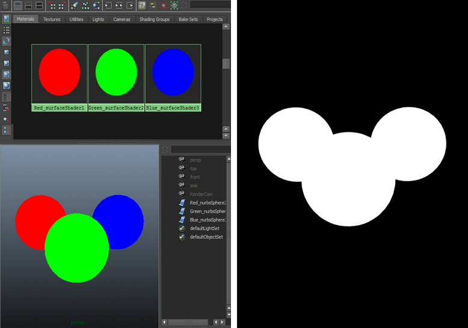
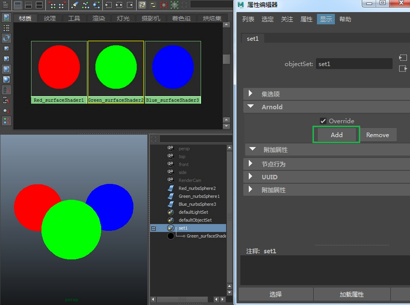
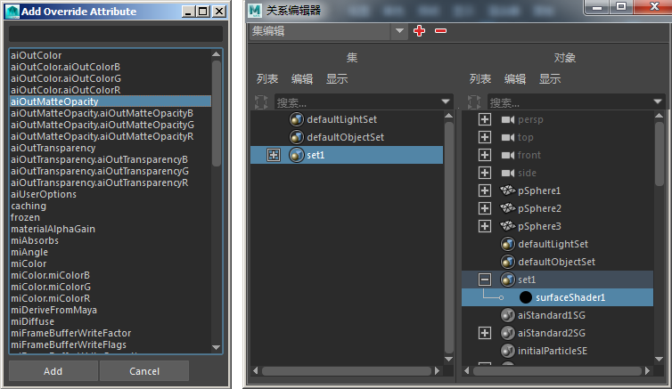
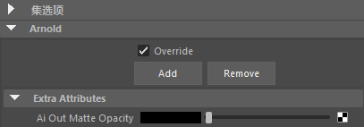
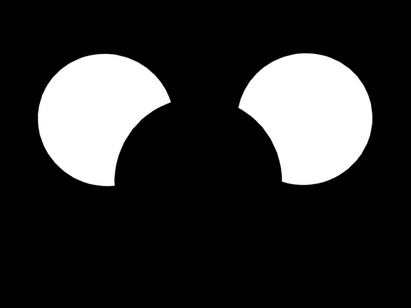

也可以通过将不同着色器的属性指定给覆盖集来更改其行为。
在本教程中，我们将演示如何将“输出蒙版不透明度” 覆盖添加到一个包含三个不同曲面着色器的集（这些着色器分别应用于三个单独的球体）。
请注意，“输出蒙版不透明度”(Out Matte Opacity) 覆盖只能与 Maya 曲面 着色器结合使用。

RGB 曲面 着色器（左）。Alpha 通道（右）。


您应该会看到“输出蒙版不透明度”(Out Matte Opacity)属性已添加到 Arnold 集覆盖的“附加属性”(Extra Attributes)。

“输出蒙版不透明度”(Out Matte Opacity) 设置为黑色

启用了“输出蒙版不透明度”(Out Matte Opacity) 集覆盖的 Alpha 通道